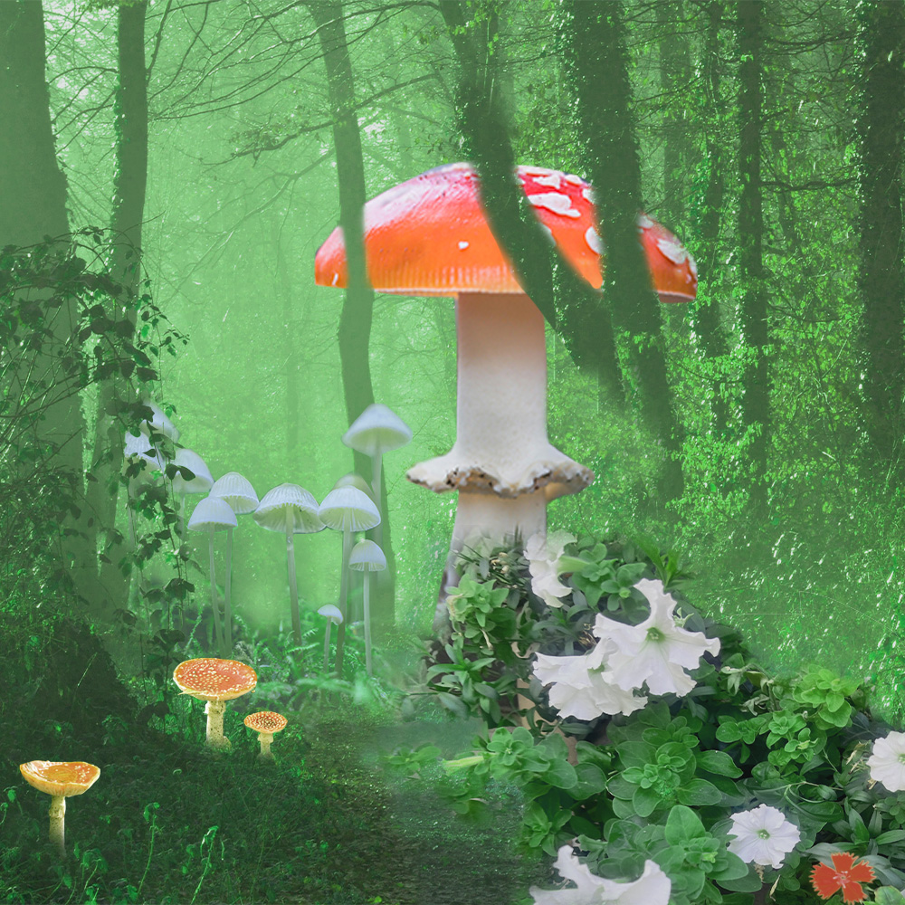
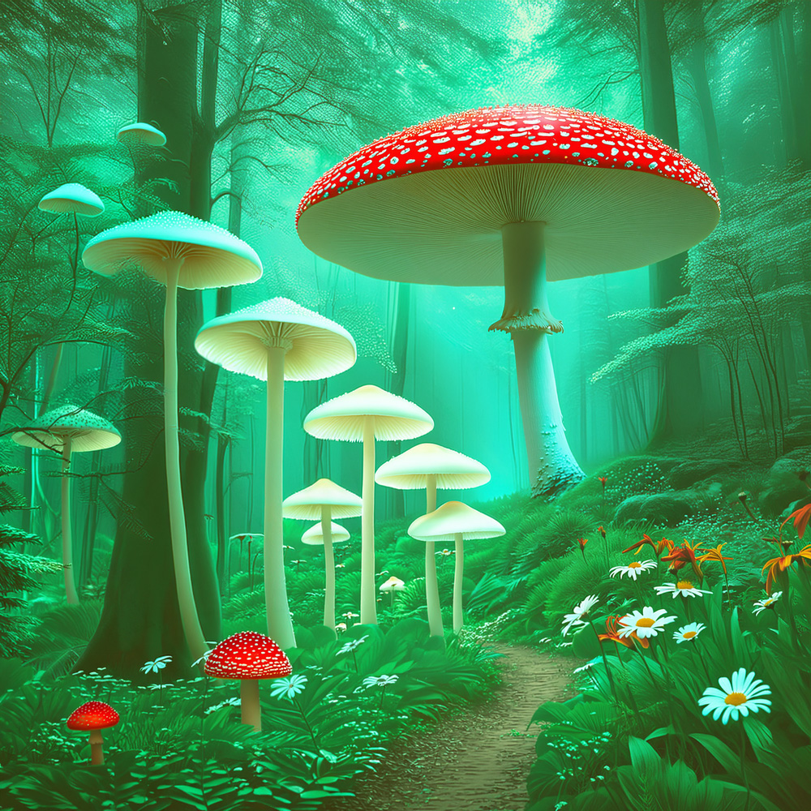

Image Project
本页面展示三张风格相似的蘑菇主题图片，均使用 Photoshop 制作，但分别采用了三种不同的创作方式：传统手工（Old School）、AI 辅助（AI Assisted）、以及生成式 AI（GenAI）。通过对比，可以直观感受各自的特点与差异。
This page showcases three mushroom-themed images created with Photoshop using three different approaches: Old School (traditional manual), AI Assisted, and GenAI. This comparison offers a clear look at their respective characteristics and differences.

红色的蘑菇像小灯笼，透明的蘑菇像凝固的露珠，还有小花点缀其中。
Red mushrooms are like little lanterns, transparent mushrooms like frozen dewdrops, with small flowers scattered among them.
使用图层蒙版、画笔工具、色彩平衡调整和自由变换。完全手工操作，不使用 AI 工具。
Used layer masks, brush tool, color balance adjustments, and free transform. Entirely manual, no AI tools.

红色的蘑菇像小灯笼，透明的蘑菇像凝固的露珠，小花点缀其间，阳光的色调更加温暖柔和。
Red mushrooms are like little lanterns, transparent mushrooms like frozen dewdrops, with small flowers scattered among them. The sunlight feels warmer and softer in tone.
使用选择主体、移除背景和生成式填充。以传统 PS 操作为基础，借助 AI 工具提升效率。
Used Select Subject, Remove Background, and Generative Fill. Built on traditional PS workflow with AI tools to improve efficiency.

红色的蘑菇像小灯笼，透明的蘑菇像凝固的露珠，小花点缀其间。AI 有自己的想法，画面更加诡异，但没有拼贴感，整体自然融合。
Red mushrooms are like little lanterns, transparent mushrooms like frozen dewdrops, with small flowers scattered among them. The AI has its own vision — the scene feels more eerie, yet without any sense of collage, appearing naturally integrated.
在 Photoshop 中逐层构建图像，使用生成式填充配合多个提示词。主要提示词包括：绿色森林、低饱和度青色丁达尔光、开满野花的地面、巨型红蘑菇、半透明菌盖的白色蘑菇、悬挂的枝叶、强丁达尔光、小径。
Built layer by layer in Photoshop using Generative Fill with multiple prompts. Key prompts included: green forest with low saturation cyan Tyndall light rays, ground full of wildflowers, giant red mushroom, a group of white mushrooms with translucent caps, hanging branches and leaves, strong Tyndall light rays, path.
— 森林里的蘑菇，三种方式，三种感觉 —
— Mushrooms in the forest, three ways, three feelings —